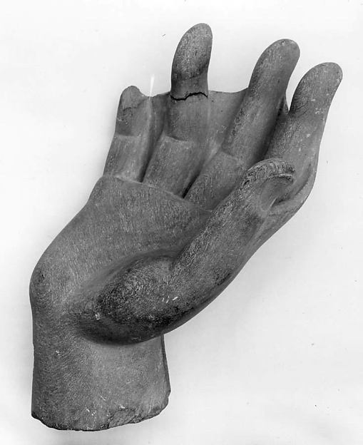

CORE / KNOWLEDGE
中道とは何か
中道は「何事もほどほどに」という一般論だけではありません。釈迦の文脈では、感覚的快楽への耽溺と自虐的な苦行という二つの極端を避け、解脱に向かう実践の道を指します。

01
二つの極端
欲望のままに生きることも、身体を痛めつければ悟れると考えることも、苦の理解には十分ではないとされます。
02
八正道としての中道
初転法輪では中道が八正道として具体化されます。単なる妥協ではなく、目的に適した実践です。
03
現代への応用
仕事と休息、努力と自己否定を同一視しないなど、極端な反応を避ける判断軸としても読めます。
DEPTH NOTES
中道とは何かをもう一段深く読む
中道はいつでも真ん中を選ぶ処世術ではありません。釈迦の出家修行の文脈では、快楽への耽溺と自己を傷つける苦行という二極を退け、理解と実践につながる道を選ぶことを指します。
他の教えとのつながり
教えの核心を読むときは、一つの用語を孤立させず、四諦・八正道・縁起・無常・無我などとの関係を見る必要があります。仏教の概念は互いに支え合っており、一語だけを人生訓に変えると本来の構造が見えにくくなります。
また、初期仏教で用いられる語と、後世の大乗仏教や日本仏教で発達した解釈を区別することも重要です。同じ日本語訳でも、時代・文献・学派によって指している範囲が異なる場合があります。
実践・読み方のポイント
実践では、概念を信じることより、自分の経験の中で確かめることが重視されます。身体感覚、感情、思考、衝動がどの条件で起こり、どのように消えていくかを観察すると、抽象語が具体的な経験へ近づきます。
このサイトでは断定を急がず、一次資料・伝承・後世の解釈を分けます。理解が一度で完成するというより、同じ概念を別の経典や実践から繰り返し照らすことで輪郭がはっきりしてきます。
原典・参照：SN 56.11